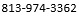

Yi Qiang
Assistant Professor in GIScience
School of Geosciences
University of South Florida
I am a geographer and GIScientist interested in spatio-temporal data modeling, big data analytics, AI/machine learning, and geocomputation. My current research focuses on:
(1) developing new data models and analytical tools for multi-scale spatio-temporal analysis, (2) utilizing GIS and spatial data science to support disaster management and community/infrastructure resilience assessment, and (3) spatial analysis of social disparities and environmental justice related to natural disasters.
I lead the Laboratory of Computational Sapatial Science for Sustainability (COMPASS Lab) at USF.
News
We are calling for sessions and abstracts for the Symposium on Scale in Spatial Analytics and Modeling in the 2022 Annual Meetings of AAG.
GA position is available from 2022 fall semester.
Website for the NSF-funded CroScalar project is online. Tools and sef-paced tutorials about the multi-scale spatio-temporal modeling framework (MSTF) will be available in this website.
Degrees
Ph.D. in geography (2012), Ghent University
M.Sc. in GIS (2007), University of Edinburgh
B.Sc. in GIS (2006), Beijing Normal University,
Appointments
Assistant Professor (2020 - present), School of Geosciences, University of South Florida
Assistant Professor (2017 - present), Dept. of Geography, University of Hawaii - Manoa
Research Associate (2016), Dept. of Geography, The Earth Lab, University of Colorado - Boulder
Postdoctoral researcher (2013 - 2016), Dept. of Environmental Sciences, Louisiana State University
Research
Visual analytics
Using visualization techniques for pattern detection and interactive exploration of multi-dimensional data.
Vulnerability and resilience
Quantitatvie assessment and modeling of social vulnerability and resilience
CNH modeling
Integrating GIS, data mining and simulation techniques to model dynamic processes of CNH systems.
Teaching
Geographic Information Systems (GIS6100, USF)
An intermediate to advanced level GIS course, covering fundamental concepts in GIScience and GIS applications in solving real-world problems.
Geospatial Data Analytics (GEOG389, UH)
Using open-source Python packages to wrangle, visualize, and model large quantities of geospatial data.
Web Mapping (GEOG476, UH)
Development of web-based GIS applications for sharing and visualizing geospatial data in the Internet.
Advanced GIS Applications (GEOG489, UH)
Applications of GIS in various problems in social, natural, and environmental sciences.
Contact
Address:
USF School of Geosciences, 4202 E. Fowler Ave, NES 107, Tampa, FL 33620
Phone:
E-mail: